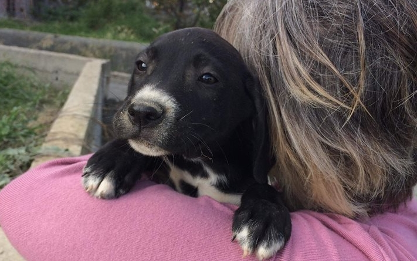

The Situation of Animals in Crete
-
Strays everywhere
If you've been in Crete, you must have noticed that strays are everywhere: in towns, villages, fields, etc. Most of them live in terrible conditions and are affected by malnutrition, diseases and injuries. They're also victims of cruelty: every single day, new cats and dogs are being abandoned, neglected, poisoned or chained in the sun with no food, water or shade. Because many are not sterilized, whole litters of kittens and puppies -sometimes just a few days old!- are frequently dumped like garbage and left to die.
-

The tourist season
Even though the strays encounter more food and attention during the tourist season thanks to the hotels and holidaymakers, emergency phone calls and Facebook messages from concerned tourists are booming. NLA's volunteers always do their best to answer and help, but there's a constant lack of money and human resources to feed, foster and care for the strays in need.
-

When the tourists are gone
The situation is even worse when the season is over. When the hotels are closed (meaning less food opportunities for the strays), poisening incidents rise up. Many strays are found dead because of the people trying to clear the streets before and after the holiday season. And again, it's up to pet rescue organizations to provide help to the poor dying strays.
-
What is the government doing?
Nothing. Pet rescue in Greece has never been a priority and solely relies on private donations and volunteering. Although the Chania Municipality has an official committee as well as an appointed vet to handle the issue of strays, their lack of involvement and interest usually leads them to call Silke and let her with the emergencies.
-
Help us
That's why Noah's Little Ark is in urgent need of your support! Money, pet food and medicines are always welcome. Check the support page for more details.